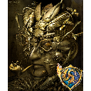
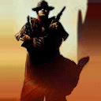

Forums galactiques > Taverne galactique : lieu de discussion informel > Adieu !!!!
Pages : 1 2
| Thot Réputation à la taverne : 577  16/09 ETU 14:07 | Score : 5 Détails HRP :
Salut tout le monde ! Je tenais a vous faire mes adieux, mais pas qu'un RP ... En HRP aussi ! Si je part, c'est a cause de ma nouvelle vie qui s'annonce : decouverte de la Fac, aucun accés Internet pour jouer, et surtout, passer du temps avec mes amis et surtout, ma petite amie ^^ ! Juste pour vous dire qu'Apocalypsis est un jeu réellement plaisant, pour une simple et bonne raison : grace a vous ! Ce jeu est réellement riche, et cela a toujours été un plaisir de venir ici ! Merci a vous Commandants et Commandantes, pour le plaisir que vous m'avez fournis ! Et j'espere qu'on se retrouvera !!! En attendant, je vous souhaite un bon jeu, et a la prochaine !!! Thot, l'Ibis Eternel ! Ps : si ca interesse, demandez a Perceval42 et a TC The Unbeliever mon adresse M.S.N, si vous voulez garder le contact ! Allez encore merci, et bonne partie ! Ps 2 : non, ce n'est pas une console de jeux video ( ^^ ), j'ai aussi fait un RP pour mon départ, si cela vous tente ... HRP | ||
| Deus Machina Réputation à la taverne : 141  16/09 ETU 14:21 | Score : 0 Détails HRP : Thot, tu as mon adresse mais tu m'a jamais ajouté... Donc je la demande à Perceval :-P !
Dommage que tu parte, mais je te soyuhaite bonne chance à la FAC, en espérant que mon année en Terminale ne soit pas ma dernière année sur apo...... Enfin, ainsi va la vie, et comme on dit, un Ibis de perdu, ......ben on dit quoi encore, en fait? Je me ferrai jamais à vos départs.... J'espère que je réussirai à vous remplacer, ou du moins, à pas tout faire empirer! | ||
| Picsou Réputation à la taverne : 215  16/09 ETU 14:42 | Score : 0 Détails J'en ai un peu marre de répéter comme deux Machina, mais je le suis donc c'est un peu normal !
Bonne chance à la fac. Je suis sûr que tu as choisis une voie qui te convient très bien ;) Tu as aussi choisis une des villes que j'aime le plus pour étudier ! Ca devient un peu lourd tout ces adieux en chaînes !Ils partent tous !Mais qui va rester ?Pas un canard comme moi, décidemment trop convoité pour sa chair !Seuls les diamants sont éternels... Moi aussi, je m'amuse beaucoup avec ce jeu, et surtout le RP !Je n'ai vraiment rien d'un canard, j'avais mis ce pseudo car j'avais rien de mieux, c'était pas réfléchi, et voila où ca me mène ! A la prochaine Thot ! édit : merci Thot mais est-ce vraiment nécessaire ? | ||
| Uriel Réputation à la taverne : 818  16/09 ETU 14:49 | Score : 0 Détails Bonne chance pour le futur, Thot, en espérant que la parenthèse Apo ne se referme jamais complètement...
Les adieux de la rentrée ca me donne le cafard. Je vais me consoler en attaquant tes planètes, tiens... ^^ | ||
| Mablane Réputation à la taverne : 1399  16/09 ETU 15:02 | Score : 0 Détails La rentrée : la bête noire d'apo... Argh... Encore un départ...
Comme le dit mon cher canard farci, qui restera ? Je vais finir par partir, moi aussi... Si tous les grands diplomates dégagent, comme Thot ou al-kashi, il ne restera plus grand monde ! | ||
| Blacksad Réputation à la taverne : 153  16/09 ETU 15:03 | Score : 0 Détails ca fait plaisisr de voir que tu pense a nous avant de partir, j'ai ton Message par Systeme Neuronal, donc si a l'occaz tu veux des news d'apo je t'en passerai...
bonne chance pour la suite, mais je me fais pas de soucis, tu sembles déja tres bien accompagné... Chanceux, va... | ||
| Cassandra Réputation à la taverne : 316  16/09 ETU 21:22  | Score : 0 Détails Merci à toi Thot. J'ai passer des super moment avec toi entre autre pas MSN. Tu était vraiment un grand commandant, tu aura toujours le plus profond de mon respect.
Prends ton envole cher Ibis, migre vers des temps heureux. Dame Cassandra, Ange-Gardienne du Bien et de la Vie | ||
| Gigitrix Réputation à la taverne : 596  17/09 ETU 11:44 | Score : 5 Détails Putain ,comme quoi ,la rentrée ,ça décime plus que toute les BHA de l'univers.
Faudrais qu'on puisse la développer technologiquement... En tout cas ,meme si mon instinct me pousse a faire le contraire ,je te salut et je te rend hommage l'ibis pour tous les moments que je n'aie pas passer avec toi dans ton assiete. | ||
| L'Ibis Eternel Réputation à la taverne : 135 29/11 ETU 11:42 | Score : 2 Détails HRP : Bon, ben je voulais pas recréer un autre Topic, car j'avais pas envie de polluer encore plus les différents Forums ...
Jamais je me suis autant barbé devant ce jeu ... Sincérement ... On a les moyens de faire un truc totalement déjanté, et on se retrouve a une gueguere pour savoir si un Conseil est une vraie démocratie ... Pour moi, Origine est morte et réellement morte ... Dommage, car je m'y plaisais ... Les derniers mots des Red T était que nous fassions un truc totalement nouveau ... Bah jcrois que c'est rapé ... En tout cas, vous le ferez sans moi ... Thot, l'Ibis Eternel vous tire son chapeau bien bas ... A une Origine qui est tombé bien bas ... Au moins, les Red T, ca avait de la gueule ... Tchao bella ! | ||
| Judayan Réputation à la taverne : 527  29/11 ETU 11:57 | Score : 0 Détails HRP/ Ah ben non pas encore! Tu peux pas rester en place un peu!
Développe un truc RP, je sais pas impose une dictature démocratique, un flower power génocidaire, n'importe quoi! Les périodes d'accalmie sont nécessaires pour la mise en place d'alliances de RPs de tensions sur des points de détails... Rappelez vous des discours pré red gala: l'Empire ne fait rien.. , post red gala: et maintenant, que faire face à l'hégémonie... A chaque fois la situation a rebondi! Aujourd'hui chacun reconstitue ses forces et une guerre larvée a lieu entre Solon-Suisses/Ares, il est normal que la dynamique générale paraisse ralentie mais le Conseil se met en place il devra bientot se prononcer sur des crises et nul doute que sa capacité, ou non, à faire face va développer le RP! | ||
| T-Rex Réputation à la taverne : 41  29/11 ETU 12:31 | Score : 0 Détails Alors comme ça vous partez commandant l'ibis!!
Je ne suis pas contre mais pouvez-vou faire les votes que vous aviez dit la deniere fois avec les alliantiste et les fédé puisque les guildiens sont déjà fait. Au revoir commandant et au plaisir de vous avoir connu. | ||
| Solon Réputation à la taverne : 412  29/11 ETU 21:19 | Score : 0 Détails HRP/ Arf, domamge, moi j'essaye de bouger la galaxie, histoire qu'on se marre mais bon tout les meme extremiste democrate :). Il se rendent pas compte que c'est pas marrant. (MP stp ;))
| ||
| cortana II Réputation à la taverne : 123  02/12 ETU 19:07 | Score : 1 Détails adieu thot, enfin aurevoir car jamais nous ne t'oublierons mon cher.
je reviens pour assiste a un triste depart. je te souhaite bonne chance a la fac et j'espere un jour que tu reviendra! cortana, boulet supreme | ||
| Uriel Réputation à la taverne : 818 02/12 ETU 23:35 | Score : 0 Détails Tiens j'avais raté le 2eme départ...
Origine morte ? La faute à qui ? Choisissez : - à la guerre (Naaaaan ! y'a tout le temps la guerre, bande d'aveugles!) - aux bavards égocentriques de l'AG qui ne peuvent pas s'empêcher de poster ? - à un coup de cafard aviaire chez notre emplumé favori ? - aux grenouilles ? - aux Suisses ? - aux Reds ? - à ta soeur ? Mais... Origine est vraiment morte ? Vous êtes sûrs ? | ||
| yulée Réputation à la taverne : 220  02/12 ETU 23:44 | Score : 1 Détails Origine est un très vieil homme encastré dans la routine.
Adieu l'Ibis, je ne t'ai pas beaucoup connu, mais je t'aimais bien. Heu... je devais pas être disparue? | ||
| L'Ibis Eternel Réputation à la taverne : 135 03/12 ETU 16:00 | Score : 2 Détails ca s'en va et ca revient ...
Je men vais, je reviens ... Vous savez qu'Origine me torturera jusqu'au bout, Uriel ... Et que je dirais que je m'en vais, et je reste tout de même attentif ... Prenez cela comme un coup de pompe venant de la grpiie aviaire, entendu ? En attendant, je reaffirme monn point de vue : du point de vue du RP politique, des idées novatrices, et des alliances constructives et autres, on se fait chier comme un rat mort, je sais pas vous !!! Et venez pas me dire que c'est de ma faute, Uriel ! C'est la faute de tout le monde et de personne de toute façon ... Bref, je suis encore la ... En observateur, et je ne dirais qu'une chose ... Je vais faire rescuciter un truc qui n'aurait jamais du disparaitre, a mon grand regret ... La Lune Blanche va renaitre, je vous le garantit ... Et cette fois, je vous jure que l'on en entendra parler d'elle ... | ||
| Perceval42 Réputation à la taverne : 305  03/12 ETU 16:04 | Score : 0 Détails Voici l'Ibis que j'ai toujours connu!
Perceval42 à votre service!!! VIVE L'IBIS, LONGUE VIE À LUNE BLANCHE!! | ||
| Gigitrix Réputation à la taverne : 596 03/12 ETU 17:09 | Score : 0 Détails Mais naaaan!
T'a rien suivis... Si origine agonise ,c'est pas a cause des grenouilles. Nous on prévois juste le temps le temps qu'il va faire. D'ailleur sur ce point ,ya pas trop a chercher ,c'est toujours orageux depuis 6 mois... Et je le dit haut et fort sans aucune peur : Vive la lune blanche !!!^^ | ||
| Rudrig de Sul'Shara Réputation à la taverne : 239  03/12 ETU 17:42 | Score : 0 Détails Faites tourner vos méninges et sortez des théories originales. Il suffit parfois d'une seule idée pour révolutionner une galaxie.
| ||
| Araskel Réputation à la taverne : 396  03/12 ETU 19:37 | Score : 0 Détails "Grave rudrig...LES FRITEUX!"
Araskel eclata de rire en se tenant la tete dans les mains: "Frite frite frite! c'est l'avenir!" |
Pages : 1 2
Forums galactiques > Taverne galactique : lieu de discussion informel > Adieu !!!!